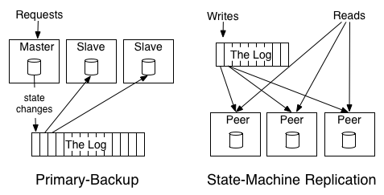

Kafka is a message queue, a pub-sub system, an event sourcing tool, and a stream processing infrastructure, is a key part of many streaming distributed systems that requires streaming data. Its underlying idea, is to aggregate data from a distributed sources, to a unifying linear log structure.
The blog is from Kafka’s creator Jay Kreps when he was at LinkedIn, contemplating the log abstraction as a key part of any distributed systems. This is not Kafka’s design paper, implementation or a tutorial, but rather the process of brewing the idea that led to its birth, and I found it equally interesting. The following are my notes.
The link to Kafka paper: https://www.semanticscholar.org/paper/Kafka-%3A-a-Distributed-Messaging-System-for-Log-Kreps/9f948448e7a5f0cc94cd53656410face8b31b18a
What Is a Log?
Log is a simplest storage abstraction, similar to what we see in application logs, records are appended to the end of a log data structure, and reads proceeds left-to-right. This simple abstraction is powerful, in that:
- It keeps the records, and the ordering of records, by when it’s appended to the data structure.
- In a deterministic system, you can reconstruct the state of the systems at any time, by replaying the input in order for every single step of the input.
The log centric approach arises from a simple observation that the author named "State Machine Replication Principle":
If two identical, deterministic processes begin in the same state and get the same inputs in the same order, they will produce the same output and end in the same state.
And there are two major different ways of leveraging logs in distributed processing and replication:
- A “Primary Backup” Model, AKA “active-passive” model, where one node is elected as master, and writes its states to log. Upon master failure, a replica is elected and take over.
- The “State Machine Model”, AKA “active-active” model, where changes/operations are written to the log, and each replica picks up the log.

What can log be used for
Data Integration
Make all of an organization’s data easily available in all its storage and processing systems.
An organization may have multiple data inputs, that gathers events and data from many places, and different consumers to digest that data. A log structure can serve as a buffer as well as a central pipeline for all the different producers and consumers. In this way, the log serves as an asynchronous messaging system. All producers and consumers can read buffered data from the log, with different pace. e.g. a real-time system may need to read instantly, while an analytic platform may read it only hourly or even daily.
Also, in a system where there are M inputs and N output, you’ll need M * N pipelines to make sure each consumer can read from all data producers. But with a single unified data pipeline, every producer and consumer can all write and read from one single log. And that’s the idea behind Kafka.
Also, Kafka’s log structure also enables high-performance optimizations, e.g.:
- Enables partitioning.
- Optimize high throughput by batching small reads and writes.
- Avoids needless data copies, as it can keep same binary data structure in memory, on disk and in network transfers.
Real-time Data Processing
Computing derived data streams.
Log also makes real-time stream processing easier. Logs enables real-time data collection from events or different data input, at different speed, that the consumers can read from at scale.
Log also enables more complicated data flow, e.g. when output of a log in the stream processing systems becomes the input of another. It can construct complicated data flow graphs. And log has benefits:
- It makes each dataset multi-subscriber and ordered, and the order is permanent.
- The log provides buffering to the processes, so that the system can work in asynchronous fashion.
Distributed System Desgin
Practical systems can be simplified with a log-centric design.
Log enables high-performance and easy integration of data producers and consumers, distributed systems are more likely to move away from monolithic relational databases, and toward more diverse data sources and consumers. Building distributed systems would more feel like lego games with open-source data components.
And a log system can work as the following role in system architecture.
- Handle data consistency by sequencing concurrent updates to nodes.
- Provide data replication between nodes.
- Provide “commit” semantics to the writer (respond only when your write is guaranteed not to be lost).
- Provide external data subscription feed from the system.
- Provide the capability to restore failed replicas.
- Handling data rebalancing of data between nodes.
The author built the powerful ideas of a log into Kafka, one of the most influential data streaming platform. This long blog might bring some insights to incorporate Kafka into a distributed system, as well as provide inside in building new system infrastructures.